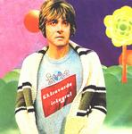

| Artist: | Ektroverde |
| Title: | Integral |
| Label: | Mizmaze/Snowdonia |
| Length(s): | 70 minutes |
| Year(s) of release: | 2001 |
| Month of review: | [02/2002] |
| 1) | Harvest | 4.49 |
| 2) | Tractors | 9.44 |
| 3) | Orange | 5.56 |
| 4) | Therefore | 7.25 |
| 5) | Pendant | 8.11 |
| 6) | Gradient | 6.51 |
| 7) | Odd Trip | 16.20 |
| 8) | Tanzania | 10.42 |
Tractors once more features the hi-hats, but no longer strictly rhythmic, overlaid with some distorted guitars, later joined by a piano, played in a Keith Jarrett like way, and saxophone. The slow build up creates an almost hypnotic atmosphere, making the lack of a climax expected.
Orange is a bit more up tempo, featuring some nice Hammond organing and other keyboards, including a spinet-like sounding instrument, which gives the track a feel you might expect from soundtrack music by the Italian Goblin. Despite the higher tempo of the track, it still feels enchanting.
Therefore starts of with a bit more of a trance (as you would associate with Ibiza) feel, but later merges in a keyboard melody that would fit a children's tv-series, and some keybaord tapestries, which take the track away from that dancy-trance realm, but a jumpy swinging feel remains.
Pendant starts with a slowly throbbing bass, joined by somewhat neurotic drumming and percussion. My associations with St Germain return. This feeling deminishes somewhat by the joining of some electronics and a mouthharp, but remains present. I like the atmosphere of the track, but the mouthharp starts to get on my nerves after some time, and there really isn't enough idea in this track to last over eight minutes.
Gradient starts with the sound of an embarking metro, driven away by some electronics. Moving in on we move into some hypnotic percussion, soon joined by some bleating sheep (some sounding more human than others). The track closes with a person telling us in Dutch and French how to properly board metro. Quite. I must say I didn't care much for the sheep.
Odd Trip seems to put you on board a spaceship, for that's the kind of trip I associate with. The beginning of this track has a particularly strong ECM feel. The guitar at times literally reminds me of Terje Rypdal (never mind the fact that he is hardly better known than Ektroverde are). it develops in what seems to be all electronics, and tape looping. It also features a saxophone player in the London metro, followed by some drivel about metros (you know what these announcers are like).
Tanzania starts of with a throbbing dunno, something sounding almost organic and somewhat eerie, overlayed with some atmosphere electronics. As the track progresses Spanish speech is interlaced, sounding like dialogue from a movie, as well as washing water.
This is not a disc that features a lot of melodies, there's enough experiments and atmospherics though.